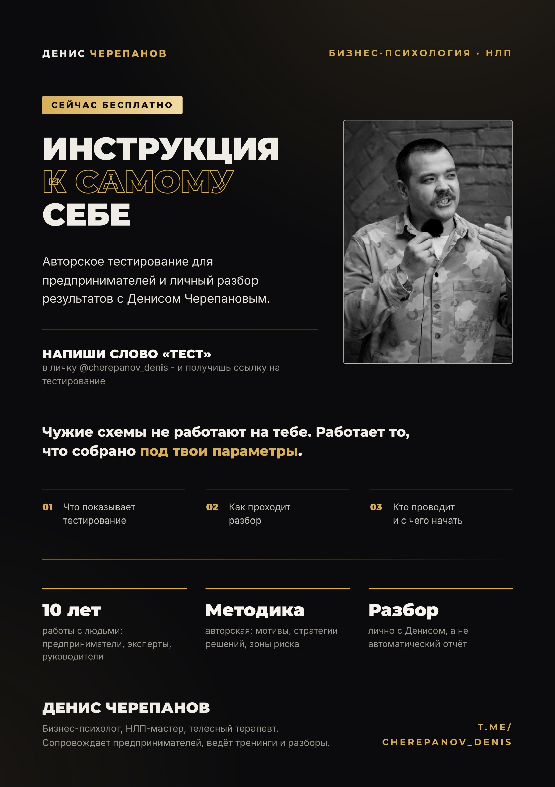

Как ты принимаешь решения
По какой схеме ты выбираешь, на что опираешься и почему одни решения даются легко, а другие висят месяцами.
Работает только своя.
Каждый из нас — уникальная личность, состоящая из 16 параметров, со своими достоинствами, недостатками, особенностями и ограничениями. Чтобы выстраивать жизнь под себя, а не под чужие правила, понимать, куда идти, на что опираться и получать СВОЁ — нужно знать себя.
Пройди авторское тестирование «Инструкция к себе» и получи личный разбор результатов от Дениса Черепанова.
ПОЛУЧИТЬ ССЫЛКУ НА ТЕСТИРОВАНИЕ ↗
Всего 30 минут, чтобы получить «невероятно точное» описание того, кто вы есть и почему поступаете именно так, что на самом деле вами движет, вдохновляет, беспокоит и как это всё влияет на отношения с окружающими людьми.
Тестирование показывает эти параметры. Не «типаж по гороскопу», а то, как конкретно ты принимаешь решения, что тебя реально двигает и где ты годами теряешь время и силы.
По какой схеме ты выбираешь, на что опираешься и почему одни решения даются легко, а другие висят месяцами.
Настоящие мотивы и интересы — в отличие от тех, которые ты себе назначил, потому что «так надо».
Где ты объективно сильнее других и как это использовать в текущих задачах, а не «когда-нибудь потом».
Что регулярно тебя подводит, какие ошибки для тебя типичны и как их обходить заранее.
Как выстраивать взаимодействие с людьми — партнёрами, командой, клиентами — выгодно для себя и без лишних конфликтов.
Точки, в которых ты усложняешь себе жизнь: лишние действия, время, энергия и деньги на пустом месте.
Можно было написать «больше денег», «больше уверенности», «больше успеха». Но это всё красивые слова на воздух.
Самое главное, что ты получаешь, — контакт с собой.
Не роль, не должность и не картинка для других. А собственная конфигурация — как ты устроен на самом деле.
И почему именно это, а не то, что принято хотеть, правильно хотеть или хотят от тебя другие.
Каким способом ты идёшь к своему, какие конкретные действия тебе подходят, а какие каждый раз ведут не туда.
К чему приводит твой привычный способ думать, выбирать, действовать и взаимодействовать с людьми.
Чего ты боишься, как тебе точно не надо делать и где ты называешь «обстоятельствами» собственные ограничения.
Потому что результаты снаружи начинаются с понимания того, кто именно действует изнутри. Когда ты знаешь себя — тебе проще выбирать своё, говорить «нет» чужому и не тратить годы жизни, пытаясь соответствовать чужим советам или рекомендациям, которые просто тупо не соответствуют тебе.
Не надо требовать от холодильника функции телевизора, несмотря на то, что это оба электроприбора
КТО ТАКОЙ ДЕНИС ЧЕРЕПАНОВ?
В психологии, НЛП и оценке личностного и профессионального потенциала сотрудников.
80% клиентов решают свой запрос за 1–2 консультации.
Консультаций по личным и бизнес-запросам. Работаю с мышлением, эмоциями, коммуникацией и решениями.
НЛП, КПТ, телесно-ориентированные, гештальт- и провокативные методы — под конкретного человека и запрос.
И психодиагностической системы «Инструкция к себе» для оценки потенциала и сильных сторон людей.
Для более 50 предпринимателей с суммарным оборотом свыше 7 млрд рублей.
Помогаю взрослым людям выстраивать отношения, в которых есть любовь, поддержка, забота, тепло и уважение.
Помог сохранить более 15 браков.
Работаю с предпринимателями, руководителями и топ-менеджерами компаний с оборотом от 50 млн рублей. Помогаю разбирать решения, в которых недостаточно цифр, аналитики и мнения экспертов.
Входить ли в новый проект — или отказаться, пока не поздно?
Продолжать партнёрство — или договариваться о выходе?
Сохранять актив — или продавать и двигаться дальше?
Масштабировать бизнес — или менять направление?
Как делегировать, если кажется, что без меня всё развалится?
Как принять решение, которое давно откладываю?
Как перестать соглашаться на неудобные условия и отстаивать свои интересы?
Как провести сложный разговор с партнёром, сотрудником или близким?
Что делать, если бизнес приносит деньги, но больше не радует?
Как вернуть силы, когда работа и чужие задачи забирают всё время?
Как выйти из постоянных конфликтов и вернуть близость в семье?
Почему я понимаю, что нужно делать, но снова откладываю?
В ответ приходит ссылка на тестирование и короткая инструкция, что делать.
Онлайн, в удобное время, с компьютера. Отвечаешь честно — это единственное условие, от которого зависит точность.
Мы договариваемся с тобой об онлайн-встрече. Я изучаю твои результаты и на созвоне объясняю, что всё это значит именно для тебя: сильные и слабые стороны, зоны риска, типичные ошибки и что с этим делать в твоих текущих задачах. Любые уточняющие вопросы — можно.
Я пришлю тебе ссылку и скажу, что делать дальше.